- Ana sayfa
- Oyunlar ve eğlence
Oyunlar ve eğlence
İndirmeden oynanan ücretsiz oyunlar: Küçük Krallık, Krallık Kartları, Organizma serisi, Kozmos, Derin Mavi, bilgi yarışması, sudoku ve daha fazlası. Telefonda da çalışır.
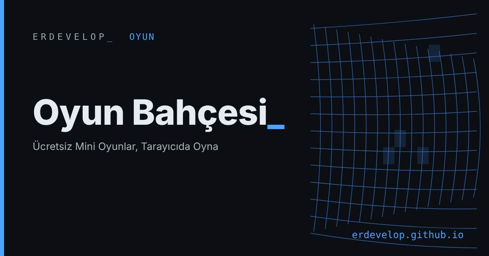
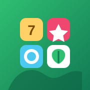
portalOyun BahçesiÖzenle hazırlanmış oyun portalı: Sudoku, Günlük Kelime, Blok Bulmaca, Solitaire, Mayın Tarlası, 2048 ve Nonogram. Günlük bulmacalar, seri ve skorlar.
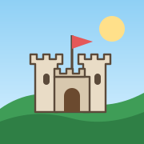
Küçük KrallıkSakin bir köy strateji oyunu: odun, taş, çiftlik, kuyu, asker ve çağlar.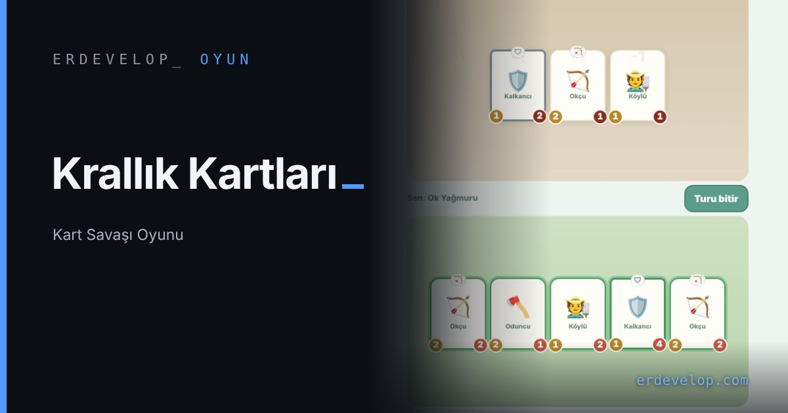
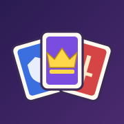
yeniKrallık KartlarıKüçük Krallık evreninde kart savaşı: sefer ve zorlu sefer, beş kahraman, 56 kart, başarımlar ve arkadaşına karşı çevrimiçi maç.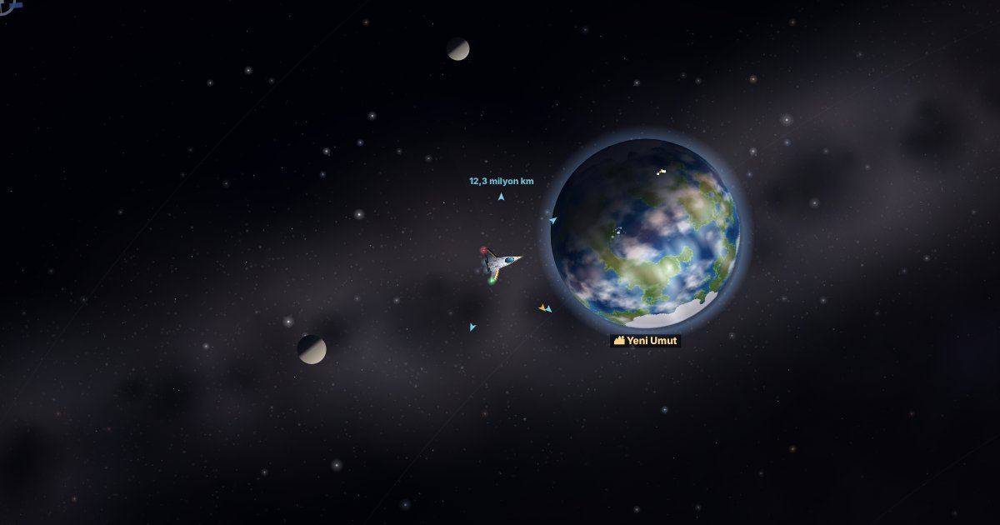
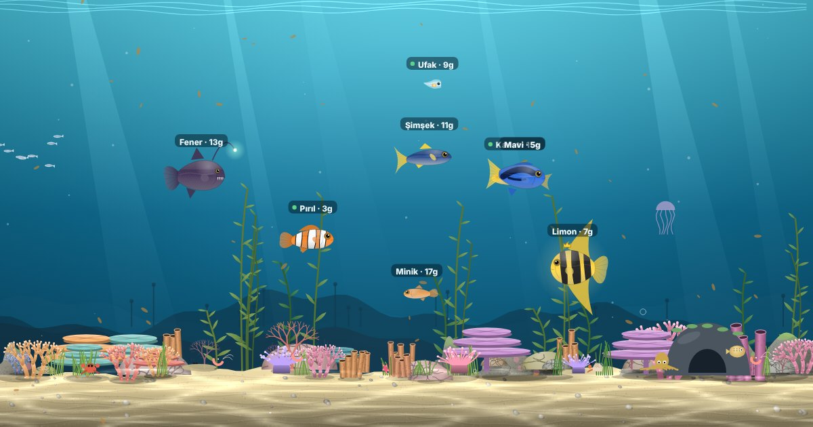
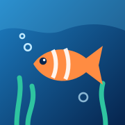
yeniDerin MaviBir balık larvası olarak doğ, her gün besle ve büyüt: yaşam alanını ve türünü seç, plankton avı, hazine kazısı ve akıntı yarışı. Ortak akvaryumda arkadaşlarınla yaşa, birbirinizin balığını besleyin, köşeni süsle, albümü doldur, sezon kartını bitir; eşinle yumurta bırakıp yeni nesil başlat. Menüden 3D görünüme de geçebilirsin.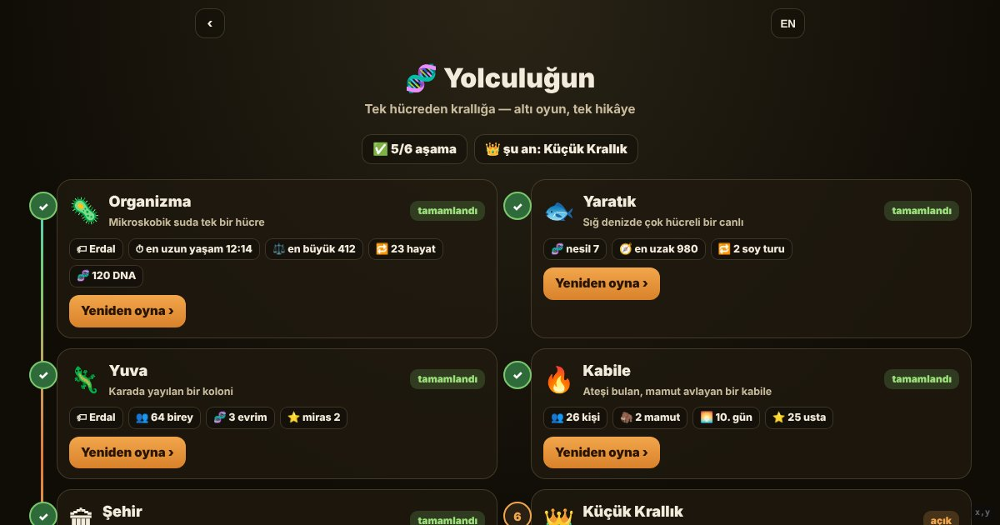
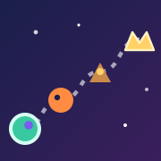
yeniYolculuğunOrganizma serisinin haritası: tek hücreden yaratığa, koloniye, kabileye, şehir devletine ve krallığa. Her aşamada ne başardığını gör, yolculuk kartını indir ya da paylaş.
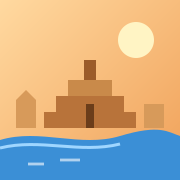
yeniŞehirKabile'nin devamı (önce Kabile'yi bitirmen gerekir): köyünü nehir vadisinde şehre dönüştür. Taşkına göre tarla kur, kanal kaz, kerpiç ve çivi yazısını bul, kalay ticareti yap, tunç dök, göçebe baskınlarına karşı sur ve kule dik, zigguratı yükselt.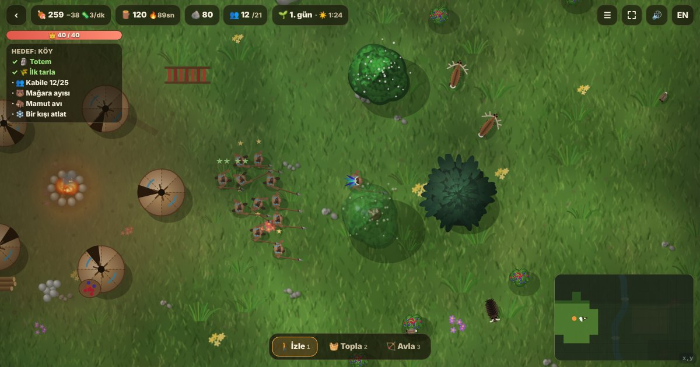
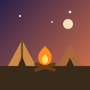
yeniKabileYuva'nın devamı (önce Yuva'yı bitirmen gerekir): reisi sen yönet, kabileye komut ver, sopa, ateş ve mızrağı keşfet, geceleri kurtlara karşı ateşin çevresinde toplan, komşu kabileyle takas et ya da savaş, mamutu avla ve ilk köyü kur.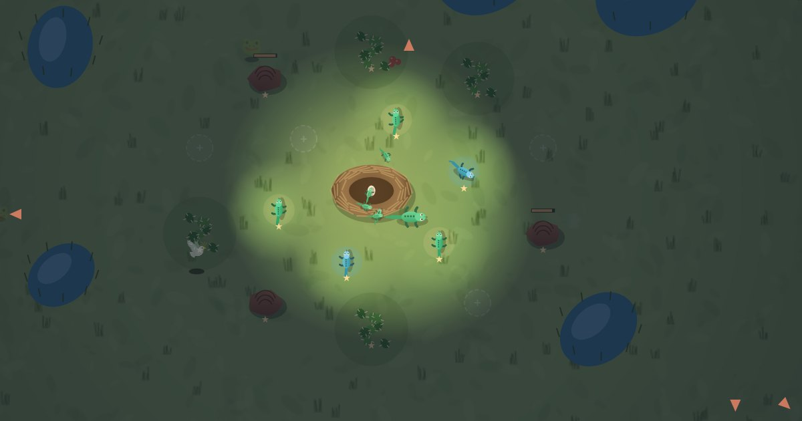
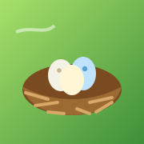
yeniYuvaYaratık'ın devamı (önce Yaratık'ı bitirmen gerekir): karaya çıkan canlının yuvasını koru. Gündüz besin ve dal topla, diken, çamur duvarı ve bekçi yavrularla savunma kur; gece gelen yırtıcıları kendin de ısırarak püskürt, kumsaldan yaylaya göç et.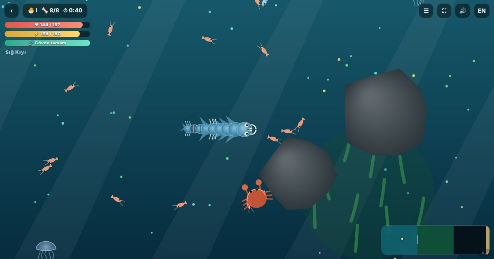
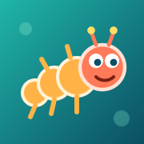
yeniYaratıkOrganizma'nın devamı (önce Organizma'yı bitirmen gerekir): hücren artık çok hücreli bir canlı. Genlerinden parça seçip gövdeni boğum boğum kur, avlan, yumurta bırak; akıntılı geçidi, yosun ormanını ve karanlık çukuru aşıp karşı kıyıya ulaş.
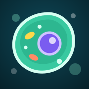
yeniOrganizmaDevasa mikroskobik bir dünyada hayatta kal: büyük olan küçüğü yer, küçük olan daha hızlıdır. Hamle yap, bölün, evrimleş; virüslerden ve dev su piresinden kaç. Günlük görevler, başarımlar ve ortak rekor tablosu. Çevrimiçi oyuncularla.
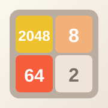
2048Klasik sayı birleştirme bulmacası.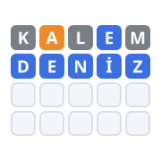
Günlük Kelime
Günün 5 harfli kelimesini 6 denemede bul; her tahminden sonra renkler ve kısa bir açıklama yol gösterir. Türkçe, İngilizce, Fransızca, Almanca.
Oyun kuralları
Okey, 101 Okey, Batak, Pişti, Tavla, Türk daması, Satranç ve Kakuro nasıl oynanır? Örnekli kurallar, puanlama ve ipuçları.
yeniSudoku
Günün üç bulmacası, 60 bölümlük yolculuk ve beş zorlukta serbest oyun; notlar, açıklamalı ipuçları, dört tahta teması.
yeniBlok Bulmaca
Parçaları 8×8 tahtaya sürükle, satır ve sütunları doldurup sil. Klasik mod ve günün oyunu.
yeniSolitaire
Klasik Klondike pasyansı; her dağıtım çözülebilir, sınırsız geri al, ipucu ve günün dağıtımı.
yeni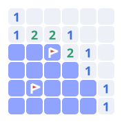
Mayın Tarlası
İlk dokunuş güvenli, tahtalar tahmin gerektirmez; bayrak modu, mantıklı ipucu, günün tahtası.
yeni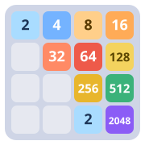
2048
Kaydır, aynı sayıları birleştir, 2048’e ulaş. Üç geri alma hakkı.
yeniNonogram
Kare karalamaca: sayılara bakarak gizli deseni boya. Dört boy ve günün bulmacası.
yeni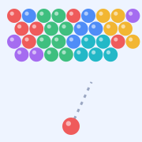
Balon Patlatma
Nişan al, aynı renkten üç balonu birleştir, patlat. Bölüm bölüm ilerle; ıskaladıkça tavan iner.
yeni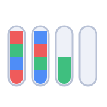
Renk Sıralama
Tüplerdeki renkli sıvıları tek renge ayır. Her bölüm çözülebilir; geri al ve ipucu var.
yeni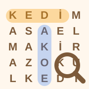
Kelime Avı
Harflerin arasına saklanmış konulu Türkçe kelimeleri bul: parmağını kelimenin üstünde kaydır. Kolay, orta, zor ve günün bulmacası.
yeni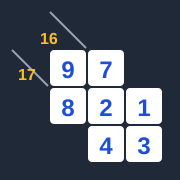
Kakuro
Toplamlı rakam bulmacası: her dizi ipucundaki toplamı versin, rakam tekrar etmesin. Olası rakam toplulukları yardımcı satırda; not alma, ipucu, günün bulmacası.
yeni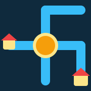
Boru Bağla
Borulara dokunup döndür; ortadaki pompanın suyunu bütün evlere ulaştır, açıkta boru ucu kalmasın. Kolay, orta, zor ve günün bulmacası.
yeni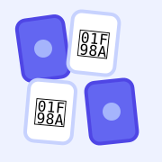
Hafıza Kartları
Kartları çevir, eşlerini bul. Hayvan, meyve, taşıt, doğa ve spor desteleri; 4 boy, iki kişilik mod ve günün oyunu.
yeni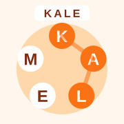
Kelime Türet
Çemberdeki harflerin üstünde parmağını kaydırıp Türkçe kelimeler türet. 247 bölüm, bonus kelimeler, ipuçları ve günün bölümü.
yeni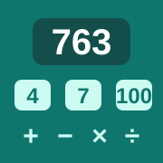
Bir İşlem
Altı sayı ve dört işlemle hedef sayıya ulaş. Kesin çözümü olan günün sorusu, serbest mod, yıldızlar ve seri.
yeni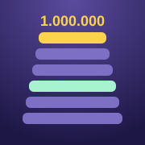
Milyon Merdiveni
Bilgi yarışması: 12 soruda 1.000.000’a tırman. Yarı yarıya, seyirci ve telefon jokerleri, barajlar ve günün yarışması.
yeni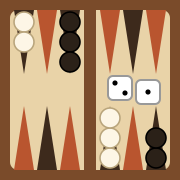
Tavla
Klasik tavla: bilgisayara karşı ya da çevrimiçi bir rakiple; hızlı eşleş ya da arkadaşına oda kodu gönder. Yasal hamleler işaretlenir.
yeni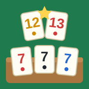
Okey
Dört kişilik okey: bilgisayara karşı ya da çevrimiçi arkadaşlarınla; boş koltuklara bilgisayar oturur. Taşlarını sürükleyerek diz, otomatik dizme ve bitirme uyarısı var.
yeni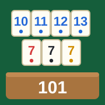
101 Okey
Dört kişilik 101: 101 ile ya da beş çiftle elini aç, masadaki perlere taş işle, okeyi değiştir. Bilgisayara karşı ya da çevrimiçi; beş ellik maç.
yeni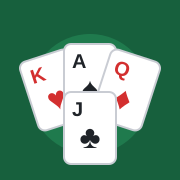
Batak
İhaleli batak: teklif ver, kozu seç, ihaleni tuttur. Bilgisayara karşı ya da çevrimiçi arkadaşlarınla; boş koltuklara bilgisayar oturur.
yeni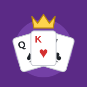
King
Klasik King: 20 el, rıfkı, kız almaz, erkek almaz, kupa almaz, el almaz, son iki ve koz. Bilgisayara karşı ya da çevrimiçi.
yeni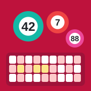
Tombala
Yılbaşı tombalası: çekilen sayıları kartında işaretle, Çinko! ve Tombala! de. Sesli okuma, bilgisayara karşı ya da arkadaşlarınla çevrimiçi.
yeni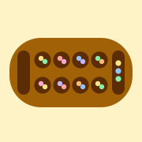
Mangala
Geleneksel Türk zekâ oyunu: kuyulardaki taşları dağıt, çift yap, hazineni doldur. Bilgisayara karşı (3 seviye) ya da çevrimiçi.
yeni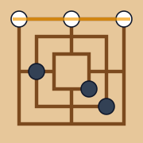
Dokuz Taş
Geleneksel Dokuz Taş (değirmen): yerleştir, sür, üçlü diz, rakibin taşını al. Bilgisayara karşı (3 seviye) ya da çevrimiçi.
yeni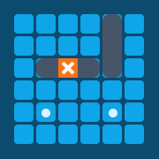
Amiral Battı
Klasik Amiral Battı: filonu diz, rakibin denizine atış yap, bütün gemileri ilk sen batır. Bilgisayara karşı (3 seviye) ya da çevrimiçi.
yeni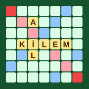
Kelime Masası
Türkçe tahta kelime oyunu: harf taşlarını diz, katlı karelerle puan topla. 100 bin kelimelik sözlük; bilgisayara karşı ya da çevrimiçi.
yeni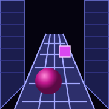
Neon Yol
3B neon yolda topunu yuvarla: parmağını kaydırıp bloklardan kaç, boşluklara düşme, tünellerde hızlan. Üç zorluk ve haftalık rekor.
yeni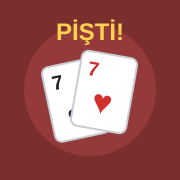
Pişti
Klasik pişti: yerdeki kartı aynı sayıyla ya da valeyle al, tek kartı yakalayıp pişti yap. Bilgisayara karşı ya da çevrimiçi; maç 101’e.
yeni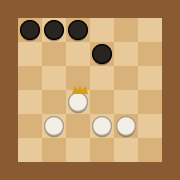
Dama
Türk daması: taşlar ileri ve yana gider, almak zorunlu, en çok alan yol seçilir, son sıraya varan dama olur. Bilgisayara karşı ya da çevrimiçi.
yeni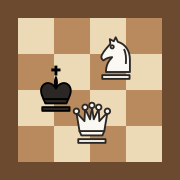
Satranç
Satranç: bilgisayara karşı (beyaz ya da siyah, iki seviye) ya da çevrimiçi. Yasal hamleler gösterilir; ipucu, geri alma ve taşların nasıl gittiğini anlatan rehber.
yeniMikro Dünya Quiz
Mikroskobik canlılar hakkında rastgele 10 soru, her cevaptan sonra açıklama. Sınıf koduyla bütün sınıf aynı soruları çözer.
yeni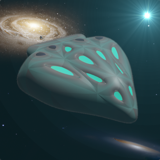
Meteor War Endless
Göktaşlarını ve plazma dalgalarını vur, yakıtını topla.
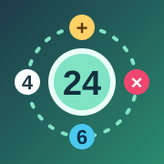
Numbermatic
Topu sürükle, işlemi kur, hedef sayıyı süre bitmeden bul.
Bilgi Yarışması
24 kategoride binlerce soru; zorluk ve süre seç, seri yaparak puan topla.
Aramana uyan sonuç yok. Tüm araçlarda ara
Oyunlar ve eğlence hakkında
Tarayıcıda açılıp hemen oynanan oyunlar: sakin bir köy stratejisi, kart savaşı, tek hücreden şehre uzanan Organizma serisi, uzayda keşif, okyanusta bir balığı büyütme, günlük bulmacalar ve bilgi yarışması. İlerlemen bu tarayıcıda saklanır; üyelik gerekmez.
Onlarca kısa mini oyun için Oyun Bahçesi’ne de göz at.
About games & fun
Games that open in the browser and play straight away: a calm village strategy, a card battle, the Organism series from a single cell to a city, space exploration, raising a fish in the ocean, daily puzzles and a trivia quiz. Progress is saved in this browser; no account needed.
For dozens of short mini games, have a look at the Game Garden too.